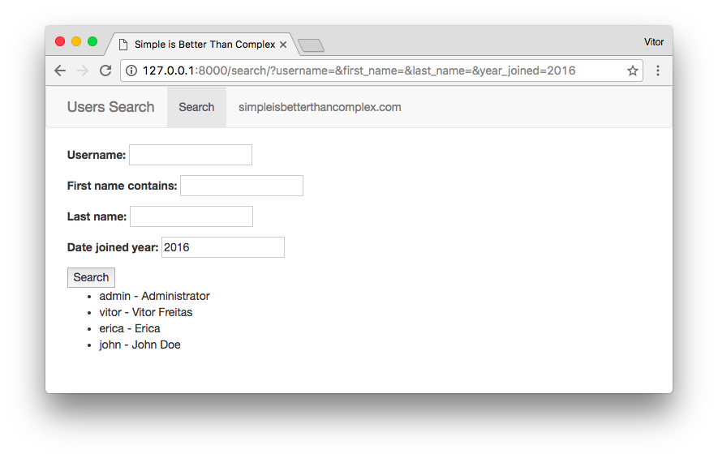
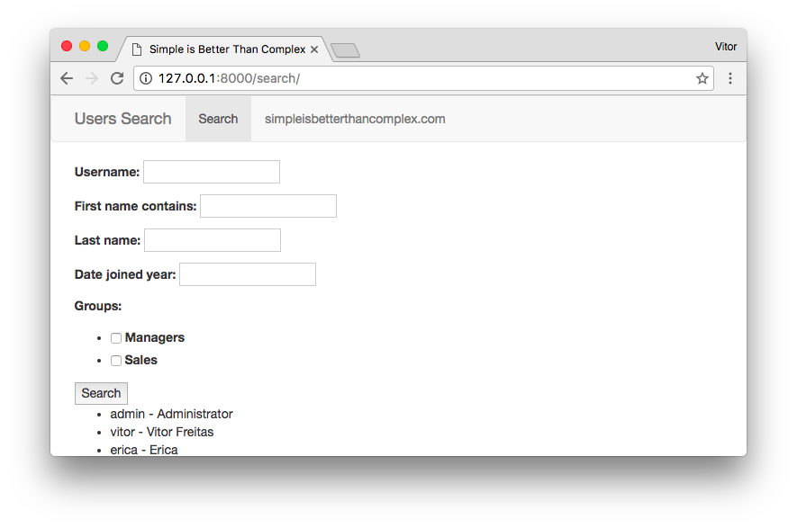

Filtering QuerySets dynamically is a fairly common use case. Sure thing there is a pluggable app to make your life easier. This tutorial is about how to use the django-filter app to add a hassle-free filtering to your views. To illustrate this tutorial I will implement a view to search for users. As usual the code used in this tutorial is available on GitHub. You can find the link in the end of this post.
Installation
Easiest way is to install it with pip:
pip install django-filterThat’s it. It’s ready to be used. Make sure you update your requirements.txt.
The default language of the app is English. It already come with some localization and language support. Currently the
supported languages are: de, es_AR, fr, pl, ru, zh_CN. Unless you want to use any of those languages in your project,
you don’t need to add django_filter to the INSTALLED_APPS.
Usage
Create a file named filters.py inside your app folder:
filters.py
from django.contrib.auth.models import User
import django_filters
class UserFilter(django_filters.FilterSet):
class Meta:
model = User
fields = ['username', 'first_name', 'last_name', ]The view is as simple as:
views.py
from django.contrib.auth.models import User
from django.shortcuts import render
from .filters import UserFilter
def search(request):
user_list = User.objects.all()
user_filter = UserFilter(request.GET, queryset=user_list)
return render(request, 'search/user_list.html', {'filter': user_filter})Then a route:
urls.py
from django.conf.urls import url
from mysite.search import views
urlpatterns = [
url(r'^search/$', views.search, name='search'),
]And finally the template:
user_list.html
{% extends 'base.html' %}
{% block content %}
<form method="get">
{{ filter.form.as_p }}
<button type="submit">Search</button>
</form>
<ul>
{% for user in filter.qs %}
<li>{{ user.username }} - {{ user.get_full_name }}</li>
{% endfor %}
</ul>
{% endblock %}The magic happens inside the UserFilter class. We simply have to pass the request.GET data to the UserFilter
class, along with the QuerySet we want to filter. It will generate a Django Form with the search fields as well as
return the filtered QuerySet.
So basically we will be working inside the UserFilter definition and the HTML template, displaying properly the data.
This is what the initial example looks like:

And after submitting the form:
Using The Generic Class-Based View
If you won’t be doing anything special inside the view function, you can easily replace it with the django-filter’s generic class-based view.
You may either pass a model or a filterset_class as a parameter. We will be working with the filterset_class, so to give us more flexibility:
urls.py
from django.conf.urls import url
from django_filters.views import FilterView
from mysite.search.filters import UserFilter
urlpatterns = [
url(r'^search/$', FilterView.as_view(filterset_class=UserFilter,
template_name='search/user_list.html'), name='search'),
]Note that I also passed the template_name as a parameter. By default django-filter will look for the template
based on the model’s app and its name, following the logic: <app_name>/<model_name>_filter.html.
Since I’m implementing a filter for the Django User, which lives inside the auth app (and I don’t have access to it),
the django-filter library would look for a template in the path: auth/user_filter.html.
Exploring the Filtering Options
It is very straightforward to use the filters. Basically it use the Django’s QuerySet field lookup.
So, let’s say we want to filter the first_name, and the input should be case-insensitive and it may match part of
the name.
filters.py
class UserFilter(django_filters.FilterSet):
first_name = django_filters.CharFilter(lookup_expr='icontains')
class Meta:
model = User
fields = ['username', 'first_name', 'last_name', ]
We may also add the date_joined field, and filter it by the year only:
filters.py
class UserFilter(django_filters.FilterSet):
first_name = django_filters.CharFilter(lookup_expr='icontains')
year_joined = django_filters.NumberFilter(name='date_joined', lookup_expr='year')
class Meta:
model = User
fields = ['username', 'first_name', 'last_name', ]
Note that I didn’t added it to the fields list. If you are defining it as a class attribute, you don’t need to
explicitly add it to the Meta class.
We may also add some extra attributes, related to the year:
class UserFilter(django_filters.FilterSet):
first_name = django_filters.CharFilter(lookup_expr='icontains')
year_joined = django_filters.NumberFilter(name='date_joined', lookup_expr='year')
year_joined__gt = django_filters.NumberFilter(name='date_joined', lookup_expr='year__gt')
year_joined__lt = django_filters.NumberFilter(name='date_joined', lookup_expr='year__lt')
class Meta:
model = User
fields = ['username', 'first_name', 'last_name', ]
Another option is to define the fields as a dictionary:
class UserFilter(django_filters.FilterSet):
class Meta:
model = User
fields = {
'username': ['exact', ],
'first_name': ['icontains', ],
'last_name': ['exact', ],
'date_joined': ['year', 'year__gt', 'year__lt', ],
}Works fine with ManyToManyField too:
class UserFilter(django_filters.FilterSet):
first_name = django_filters.CharFilter(lookup_expr='icontains')
year_joined = django_filters.NumberFilter(name='date_joined', lookup_expr='year')
class Meta:
model = User
fields = ['username', 'first_name', 'last_name', 'year_joined', 'groups']
We may also override the default widget for the ManyToManyField groups field, using checkbox instead:
from django import forms
from django.contrib.auth.models import User, Group
import django_filters
class UserFilter(django_filters.FilterSet):
first_name = django_filters.CharFilter(lookup_expr='icontains')
year_joined = django_filters.NumberFilter(name='date_joined', lookup_expr='year')
groups = django_filters.ModelMultipleChoiceFilter(queryset=Group.objects.all(),
widget=forms.CheckboxSelectMultiple)
class Meta:
model = User
fields = ['username', 'first_name', 'last_name', 'year_joined', 'groups']
For more details about the field options, please refer to the django-filter’s official documentation.
Improving the Template
Actually this is an extra for the post. In the end, the filter.form we access in the template is just a regular
Django form. But in case you are wondering how to make it look prettier, here is what we can do:
{% extends 'base.html' %}
{% load widget_tweaks %}
{% block content %}
<form method="get">
<div class="well">
<h4 style="margin-top: 0">Filter</h4>
<div class="row">
<div class="form-group col-sm-4 col-md-3">
{{ filter.form.username.label_tag }}
{% render_field filter.form.username class="form-control" %}
</div>
<div class="form-group col-sm-4 col-md-3">
{{ filter.form.first_name.label_tag }}
{% render_field filter.form.first_name class="form-control" %}
</div>
<div class="form-group col-sm-4 col-md-3">
{{ filter.form.last_name.label_tag }}
{% render_field filter.form.last_name class="form-control" %}
</div>
<div class="form-group col-sm-4 col-md-3">
{{ filter.form.year_joined.label_tag }}
{% render_field filter.form.year_joined class="form-control" %}
</div>
<div class="form-group col-sm-8 col-md-6">
{{ filter.form.groups.label_tag }}
<div>
{% for choice in filter.form.groups %}
<label class="checkbox-inline">
{{ choice.tag }} {{ choice.choice_label }}
</label>
{% endfor %}
</div>
</div>
</div>
<button type="submit" class="btn btn-primary">
<span class="glyphicon glyphicon-search"></span> Search
</button>
</div>
</form>
<table class="table table-bordered">
<thead>
<tr>
<th>Username</th>
<th>First name</th>
<th>Last name</th>
<th>Date joined</th>
<th>Groups</th>
</tr>
</thead>
<tbody>
{% for user in filter.qs %}
<tr>
<td>{{ user.username }}</td>
<td>{{ user.first_name }}</td>
<td>{{ user.last_name }}</td>
<td>{{ user.date_joined }}</td>
<td>
{% for group in user.groups.all %}
{{ group }}
{% empty %}
<em class="text-muted">No group</em>
{% endfor %}
</td>
</tr>
{% empty %}
<tr>
<td colspan="5">No data</td>
</tr>
{% endfor %}
</tbody>
</table>
{% endblock %}The result:
Please note that the {% render_field %} tag is available in the django-widget-tweaks app.
If you want to learn more how to use it, have a look on this post: Package of the Week: Django Widget Tweaks.
Conclusions
That’s it! I just wanted to share a little bit about this package. There’s much more you can do with it. It also integrates well with Django Rest Framework.
The code used in this tutorial is available on GitHub simple-django-filter.
The django-filter package:
 Expressions") Django Tips #13 Using F() Expressions
Django Tips #13 Using F() Expressions
 How to Extend Django User Model
How to Extend Django User Model
 How to Setup a SSL Certificate on Nginx for a Django Application
How to Setup a SSL Certificate on Nginx for a Django Application
 How to Deploy a Django Application to Digital Ocean
How to Deploy a Django Application to Digital Ocean